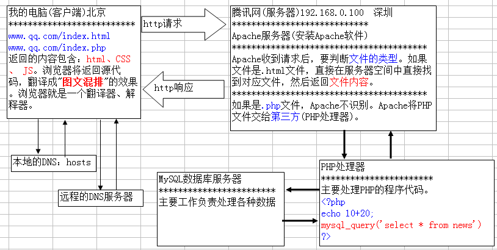

Pday1-PHP：WEB端开发（环境搭建）
PHP全称（hypertext preprocessor）超文本预处理器，开源的，跨平台的脚本语言。
一、动态页面-- 涉及到数据处理的页面
asp--.net--(php--jsp) php开发迅速，可定制
二、网络基本概念
1. IP地址：IP的全称是Internet Protocal Address网际协议地址，就是网络地址。
IP具有唯一性，是由32位二进制构成，分成4字节。现实中“点分十进制”。
特殊IP地址：127.0.0.1代表本身这台计算机。
2.域名：DN Domain Name，就是一个网址，就是一个名字。www.sina.com
构成：字母、数字、中划线， 长度不超过255个字符
特殊的域名：localhost代表本身这台计算机
3.DNS：Domain Nane System域名解析系统，将域名DN转为对应的IP地址。（服务器只能识别IP地址）
DNS是运行在互联网上的服务器。DNS转换器远远不只一台，就近原则。
三、hosts-----本地的DNS 常用作加快访问列表网站或FQ。
hosts是本地的DNS，DNS中就是IP地址和域名的对应关系表。 hosts文件路径：C:\Windows\System32\drivers\etc
#IP地址和域名的对应关系表，IP地址在前，域名在后，中间用空格隔开
127.0.0.1 localhost
计算机优先通过本地hosts解析域名，并访问该IP，所以设置需正确，127.0.0.1 www.google.com //谷歌将无法访问。
四、PHP网页的工作原理
客户端（本地DNS-hosts、远程DNS）《http响应 -----http请求 》服务器Apache （PHP处理器、MySQL数据库）

五、Apache服务器
Apache特点：免费的、跨平台、安全性、配置虚拟主机等
其他服务器：IIS、Nginx
WAMP（windows、apache、mysql、php）LAMP（linux、apache、mysql、php）
六、安装Apache
netstat -ano查看所有端口占用情况
net start apache2.4，net stop apache2.4启动关闭，或D:/zwamp/Apache24/bin/httpd -k start|stop|restart开启
Apache、PHP、mysql三个软件安装在一起。httpd -k uninstall卸载sc delete apache
Apache测试：127.0.0.1、localhost----It works!//成功安装,httpd -v查版本，httpd -M查加载模块
bin---apache主程序及可执行文件，conf---Apache配置文件，htdocs---默认网页根目录，modules---Apache模块文件

七、端口：软件运行时占用的一个编号。范围0-65535，每一个端口号对应一种服务。1000以下端口大部分已被系统占用。
八、Apache配置
Apache配置文件的语法检查命令（apache调错命令）。 httpd.exe（或httpd -t）是Apache的主应用程序，-t是参数
----正确：Systax OK，错误：AH00526: Syntax error on line 247 of D:/zwamp/Apache24/conf/httpd.conf:
set path---显示环境变量所有的目录
环境变量设置：我的电脑右击>>属性>>高级系统设置>>高级>>path，添加文件路径D:\zwamp\Apache24\bin;
1、Listen：监听自己电脑的IP地址或端口的请求，然后提供服务。 语法：Listen [IP地址]:[端口号]----例：Listen 80
2、DocumentRoot：修改网站根目录，在conf/httpd.conf下----DocumentRoot "E:/CZwj/Apqdir"
3、DirectoryIndex：指定网站的默认首页。例DirectoryIndex index.html index.php从左到右依次找
4、<Directory 设置目录路径></Directory>目录权限，当修改了网站根目录的位置，需重新指定该目录的权限。
Options All|None|Indexes//这里要3选1，All开启所有权限,NONE禁止访问目录任何内容,INdexes如首页不存在，则显示目录列表
Order Deny ,Allow //1、设置允许拒绝的先后顺序
Deny from All //2、deny设置拒绝哪些IP地址的访问
Allow from All //3、allow设置允许哪些IP地址的访问
Require all granted//新版本apache需要赋权
上面3句结果是允许所有IP地址的访问，因为第一句allow在后。
九、Apache虚拟主机配置：一台计算机就是一台主机，但为了让一台主机上同时通过不同域名去访问不同页面，出现虚拟主机。
1、虚拟主机介绍：将一台主机划分成”若干个”小空间，每个小空间运行一个独立的网站。
每一个小空间对应一个独立域名。Apache是所有网站共享。PHP也是大家共享。
2、NameVirtualHost 网络地址//多个虚拟主机，都使用哪一个IP地址。一个主机一般只一个IP地址。IP地址要向本地区电信局申请和备案的。
虚拟主机配置步骤：1、hosts指定对应的域名2、Apache的主配置文件httpd.conf 开启虚拟主机3、Apache的虚拟主机配置 httpd-vhosts.conf
# Virtual hosts
Include conf/extra/httpd-vhosts.conf
3、<VirtualHost></VirtualHost>配置段 创建虚拟主机的三要素
NameVirtualHost *:80 // #配置基于指定IP的虚拟主机(要素 1、创建一个虚拟主机)
<VirtualHost *:80> //#配置www.2016.com虚拟主机(要素 2、给虚拟主机设置一个域名)
ServerName www.2016.com //#绑定域名
DirectoryIndex index.html index.php //#默认首页
DocumentRoot "E:/CZwj/www" //#指定网站根目录(要素3、设置虚拟主机中文件存放的路径)
<Directory "E:/CZwj/www"> //#指定目录权限(要素4 、继续设置首页，文件的权限)
Options Indexes
Order Deny,Allow
Allow from all
Require all granted //#虚拟主机配置，apache2.4.2一定要加赋权语句Require all granted
</Directory>
</VirtualHost>
<VirtualHost *:80> //典型例子
ServerName www.tpshop.com
DocumentRoot "E:/CZwj/tpshop"
<Directory "E:/CZwj/tpshop">
Options Indexes FollowSymLinks ExecCGI // 在该目录中，服务器将跟踪符号链接,要支持重写时需开启， 在该目录下准许使用CGI
AllowOverride All // Apache服务器是否去找.htacess文件作为配置文件
Require all granted
</Directory>
</VirtualHost>
十、安装PHP，php -v查看php版本号，检查是否成功安装，或<?php echo phpinfo();?>
配置Apache使之能处理php脚本
LoadModule php5_module "D:/zwamp/php5.6/php5apache2_4.dll"---1、LoadModule，加载PHP5的模块
AddType application/x-httpd-php .html .htm .php---2、AddType，调用PHP模块来处理AddType后类型文件
PHPiniDir "D:/zwamp/php5.6"---3、Apache启动时，自动加载Apache的配置文件，还要加载PHP的配置文件。
改时区date.timezone =PRC
十一、MySQL是关系型数据库。瑞典AB公司开发，后被Oracle收购。
测试MySQL是否启动net stop|start mysql
mysql -hlocalhost -uroot -p123456登录,结果Welcome to the MySQL monitor.---exit退出
PHP加载MySQL模块在php.ini中1、extension_dir = "D:\zwamp\php5.6\ext"2、extension=php_mysql.dll